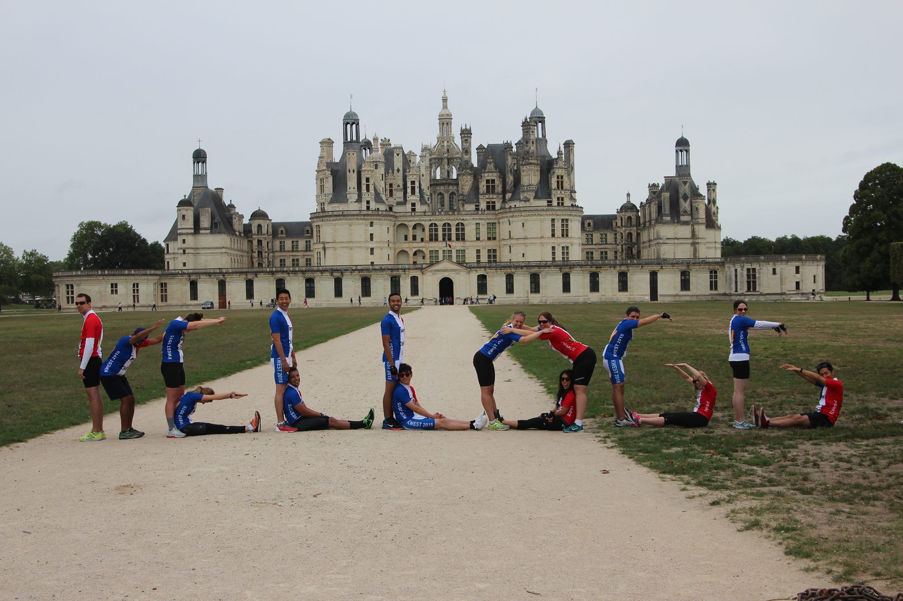

Shannon is an experienced strategy consultant, who is currently pursuing her MBA at the Kellogg School of Management. Previously, Shannon was a Strategy Manager at Accenture where she advised clients on “all things customer”, working across marketing, sales, service, and customer experience functions. She brings the best thinking on how to engage and connect with customers from a broad range of industries, including high tech/ communications, banking, resources, hospitality, CPG, insurance, wealth management, and retail. She has significant experience leading diverse teams through data-driven analysis to develop meaningful and actionable recommendations for her clients.
Shannon is also passionate about community leadership. She founded Community Seed to organize professionals to give their time and skills to grow non-profits success. Today, Community Seed is 60+ volunteers strong and has delivered more than 3,000 hours of impact-creating time to our clients.
Shannon also enjoys cooking and is pursuing a culinary arts certificate at George Brown.Shannon has work experience in Canada, the United States and Europe. She has both Canadian and American citizenship.
Community Seed is an organization of passionate professionals who volunteer time to address unique challenges faced by non-profit organizations. We partner with community organizations to deliver solutions in organizational development, human capital, funding and marketing, and expansion strategy.
As a member of the Sales & Customer Service practice, I worked on 12 projects across 8 industries over the past five years.